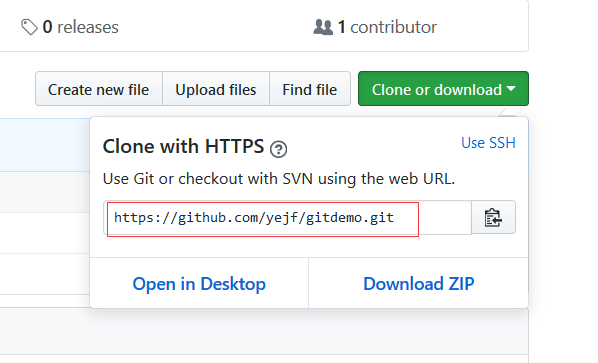

git 介绍
本教材旨在让你快速掌握git的使用，而不是一个系统学习的教材，通过本教案，你可以快速地运用git,使用git命令来达到你的版本控制的目的，但如果你想系统地学习git，可以参考如下站点
廖雪峰的官方网站
猴子都能懂的GIT入门
git参考手册
git简易指南
以上的学习资料都非常的简明、易懂，利于学习和理解，是写得很好的教材，值得学习
当然，git还有更深入的知识，如果你要深入理解git的话，还可以去看如下资料：
Pro Git
Git-Flow备忘清单
git 是一个非常棒的版本控制软件，它目前有很完整的生态，下面让我们进入 git的学习之中吧…
标签管理
标签，也叫tag,在git中，它类似于一个不能移动的分支【我们知道，分支本质上是一个可移动的指定】，所以，标签就是钉死在某个提交点上的一种技术，相对提交点，我们可以在标签上附加上一些其它的信息，比如数字签名之类的
标签操作
1 | # 列出所有的标签 |
1 | # 如果标签太多，还可以通过-l参数来过滤, 匹配字符中可以写 * 来通配 |
1 | # 查看单个指定的标签 |
下面我们来创建几个标签，需要注意的是在git中，以两种不同的标签，分别是：
- 轻量标签[lightweight]
- 附注标签[annotated]
一个轻量标签很像一个不会改变的分支 - 它只是一个特定提交的引用。
然而，附注标签是存储在 Git 数据库中的一个完整对象。 它们是可以被校验的；其中包含打标签者的名字、电子邮件地址、日期时间；还有一个标签信息；并且可以使用 GNU Privacy Guard （GPG）签名与验证。 通常建议创建附注标签，这样你可以拥有以上所有信息；但是如果你只是想用一个临时的标签，或者因为某些原因不想要保存那些信息，轻量标签也是可用的
下面我们分别来创建这两种标签
1 | # 基于当前提交点来创建一个轻量标签 |
如果你想基于之前某个提交点来创建另一个标签，我们可以使用git log --oneline 来得到提交点，然后再创建标签，如下：1
2
3
4
5
6
7
8
9
10
11
12
13
14
15
16$ git log --oneline
117b6f7 Merge branch 'testing'
2393508 modify f4.txt
2b4645f modify readme.txt
79309a2 delete world.java file
190db88 modify World.java
0ff04d2 修改World.java文件
e986401 添加World.java文件
f6e2999 add new file f4.txt
c5fd500 add new file f3.txt
6d0a0e2 Merge branch 'issue2'
5cc9e23 add new file f2.txt
d0f63b3 resolved conflict
b6152d7 update readme.txt by master branch
235e87d update readme.txt in issue1 branch
4324270 add readme.txt file
然后，我想基于5cc9e23提交点来创建一个标签，如下：1
$ git tag v0.1 5cc9e23
没有任何提示，则表示创建标签成功.
如果要创建附注标签，则执行：1
$ git tag -a v0.2 -m '一个玩具版本，只有最基本的功能' f6e2999
现在，我们通过命令git show tag_name 来看看轻量标签与附注标签的区别，如下：1
2
3
4
5
6
7$ git show v0.1
#显示的结果如下：
commit 5cc9e23fe5504127db5a1f714fae46c2f071ca57
Author: yejf <yejf@sz-tz.org>
Date: Thu Dec 28 11:18:21 2017 +0800
add new file f2.txt
可以看出，只有提交点的信息
1 | $ git show v0.2 |
可以看到，附注标签除了提交点外，还有创建标签的作者、创建日期信息。
推送到远程
默认情况下，
git push操作并不会传递标签到远程仓库中，你必需显示地推送，执行：git push origin [tagname]
如果你想把本地的创建标签都推送到远程，可以执行：git push origin --tags
现在，当其他人从仓库中克隆或拉取时，他们也能得到你推送的标签。
github操作
github做为最知名的项目托管平台，世界上大多数的开源项目都托管在github上，几乎涵盖了所有编程语言的开源项目，做为开发人员，不能没有github帐号，所以，如果你还没有github帐号的话，请点击此处，注册一个.
创建项目
登录github后，我们就可以创建一个项目，也叫一个repository, 在网站的右上角，点击+号，如下：
会弹出另一个页面，让你填写仓库相关的资料，如下：
- 输入仓库名[repository name],也就是项目名，一个仓库对应一个项目
- 输入描述信息
- 默认勾选了 Public 项目
- 勾选生成项目的 README 文件
- 添加 .gitignore 文件和选择开源许可证
- 最后，点击 Create Repository 按钮
创建好项目后，我们就可以进入项目，并对项目界面做一下基本的认识
管理项目
首先，进入项目后，我们可以看到如下界面：
可以看到，第一个标签就是Code, 也就是我们的项目代码，但此时，里面只有我们让生成的3个文件，如下：
- .gitignore
- LICENSE
- README.md
其中，.gitignore文件是告诉git仓库，在工作区中的哪些文件我们无需管理，也就是忽略的文件，它的内容大致如下：1
2
3
4
5
6
7
8
9
10
11
12
13
14# eclise environments
.classpath
.project
.class
.war
.zip
.rar
# IDEA environments
.idea
*.iml
.settings/*
# maven environments
/target/*
/target/
其中，#开头的表示注释，* 代表通配， / 代表目录， 这个文件我们可以自己书写里面的内容，默认情况下，不同的开发语言这个文件的内容不同。
而LICENSE文件是开源许可证协议文件，一般无需操作
README.md 文件是针对项目的描述性文本，它采用markdown格式编写，遵守md的语法。
另外，在项目主页面上，还可以看到当前的分支，提交次数，分支数， 贡献者，发布次数 信息，也有Issues, Pull Requests, Project, Wiki, Setting 等功能标签，所有，我们在这个页面上，就可以操作与项目相关的所有事情。
下面就说说如何去clone一个项目以及何在项目中创建issue
- clone项目，支持两种方式，默认是https，还有就是 ssh, 先来看一下https的地址
点击按钮Clone or download,可以看到如下界面

可以看到我们要克隆项目的https地址，为：https://github.com/yejf/gitdemo.git
当然，你也可以很容易地切换到ssh地址，只需要点击这个弹出层的右上角的Use SSH, 得到如下界面
我们看到的项目地址变成了：git@github.com:yejf/gitdemo.git
我们这里采用https的地址，你在你本地电脑的任何位置，右击，选择git bash here后，在命令行中，输入：1
$ git clone https://github.com/yejf/gitdemo.git #注：这个地址要写你自己的地址，也行这会儿我已经删除了这个项目
这样一来，你在本地就克隆了一份远程仓库的项目，其它的操作就是git的操作，前二篇文章我们对git做了讲解。
我们要开发项目，得要有做事的指导方针和总体需求，把总体需求按照一定的设计划分成多个不同的任务，然后再一个一个地完成这些任务，当然，多人协作时，可以让多人来完成这些任务，有的任务之间有先后顺序，任务有轻重缓急等等，这些任务，在github上就是Issue, 所以，我们要来了解一下如何创建和管理 Issue
我们在项目主页面上，点击Issues标签，进入 Issue界面，如下：
第一次进来，这里没有任何的issue, 需要项目开发人员自行创建issue,创建的按钮清晰明了，在右边点击New Issue, 出来如下界面：
左边主体部份是issue标题和issue具体内容，我们可以对这个任务做评细的描述，不同的公司可能会有不同的描述规则，这时不多做介绍，主要目的是把要做的事情描述清楚。
右边有较丰富的辅助性设置，包含：指定受托人[assignees], 给任务打上Labels, 选择里程碑[Milestone],指定完成时间等信息，当然，这些都不是必需的，但是对于一个issue来讲，有这些辅助信息可以让多人协作更有效率，配合更好。
创建好issue后，指定的受托人[assignees]会收到一个通知，同时，参与者可以在每个issue下面评论，完成 issue后，可以close这个issue, 如果发现之前的issue没有完成后，还可以再次open这个issue, 具体的操作可以在项目中体验。
项目成员的管理
上面讲到issue的创建和使用，在创建issue时，指定assignees时，是从我们这个项目的参与者中来选择的，所以，事先，我们应该把相关的开发人员添加到我们的项目中来，可以有多种式来邀请，如：
- 发送邀请链接
- 直接搜索人员，并加入
进入项目的setting标签，选择 Collaborators 选项卡，如下：
里面可以让我们输入参与者的名字进行google式搜索，前提这个用户是github平台上的注册用户。
一旦某个人进入到了这个项目，在他们主页面上就可以看到。
删除项目
这个动作比较危险，因为一旦实施了删除，就再也不能恢复，所以，github平台上，删除项目的入口藏得很深。
进入项目的setting标签，选择 Options 选项卡，然后一直把页面通过下拉框拉到最下面，看到如下界面：
然后，点击delete this repository

会得到再次确认的警告，并让用输入项目的名称，如果项目名称输入无误后，就会彻底地删除这个项目
基于PR的操作
PR，也叫Pull Request, 是一种基于分支、合并的开发流程，它可以让项目的所有参与者都各自在自己的分支上开发，而互不影响，由某个人负责去合并分支，而不是由后提交者负责合并，把处理冲突的操作放到不影响开发的情形下进行，实践证明，基于RP的开发是很管用的。
使用RP的流程大致如下：
- 开发者拿到分配给自己的issue
拉取出 develop分支或master分支的最新版本
1
2$ git checkout master
$ git pull在本地仓库创建一个与issue名同名的分支,并切换到此分支上
1
$ git checkout -b issueXXX
完成issue中规定的任务代码，添加并提交修改
1
2$ git add --all
$ git commit -m "日志"把本地的issue分支推送到远程
1
$ git push --set-upstream origin issueXXX # 第一次需要这么做，后面直接 git push 【因为远程已有这个分支】
在github平台上的项目中，创建一个RP, 如下：

填写相关的资讯后，可以选择代码审核人员以及测式人员，提交即可代码审核人员得到通知后，审核并测试代码，如果没有问题，则合并到 develop分支或master分支上去
这个在平台上可以可视化操作合并审核者在远程仓库中删除这个分支
在平台上可以可视化地删除开发者在本地删除这个分支
1
$ git branch -d issueXXX
以上就是基于PR开发的基本流程，当然这些都是可以在开发中调整的，不同的项目规模采用的开发模式会不一样，所以，不能生搬硬套，而是要掌握git的核心，在具体的项目中灵活运用才是正道。
设置ssh的KEY
前提：
在本地你要利用ssh的工具生成公钥，然后把公钥的内容COPY一份，再到github上进行配置，如下：
点击用户头像边上的下拉按钮，选择 Setting, 如下：
然后，再选择SSH and GPG keys, 进入如下界面
到了这个界面上，标题可以任意写，而内容就是要你事先生成的SSH的公钥，有关这一部分的内容，请查看ssh学习
命令小结
- $ git tag tag_name
- $ git tag [-a] tag_name commit_id
- $ git show tag_name
- $ git tag
- $ git tag -l ‘匹配模式’
- $ git tag -a tag_name -m ‘日志’
- $ git push origin tag_name | [–tags]